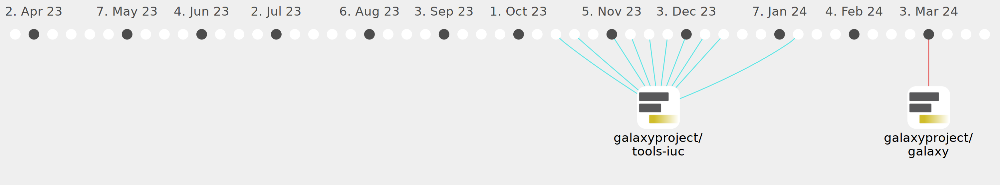

richard-burhans

Commits all-time: 112
Commits last year: 52

(50)
- 7503e97
- 701a94e
- 21a538e
- b079003
- 97a41cf
- 8264a52
- 48db4e0
- 1bcc9d4
- 981627f
- 053516d
- e96511b
- 2f2e7b5
- 1be175e
- 37ce22e
- 0b933c5
- e2ffb4c
- 6496844
- 89b2c15
- fecb8c4
- e768e72
- 80dd6b3
- 1f50ec2
- 155c99b
- 54c20c6
- 68d4da3
- bc03c5b
- 5c623b5
- d96265e
- db4134b
- cad59e7
- b7f1892
- 46b5cb7
- 0951690
- a519077
- 561e8df
- 20c332a
- d91a0cb
- f720378
- b63a566
- 7f47ff3
- 49e0bef
- 2248cb9
- 468db1d
- 40a0527
- 31751f6
- d9f467b
- fc1c6a3
- 3c0e5d7
- 74c3a4b
- e124c57
(2)